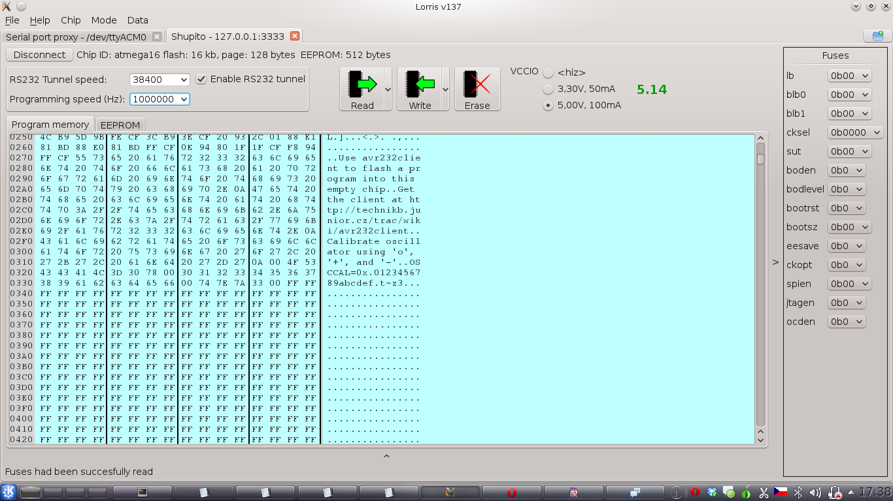
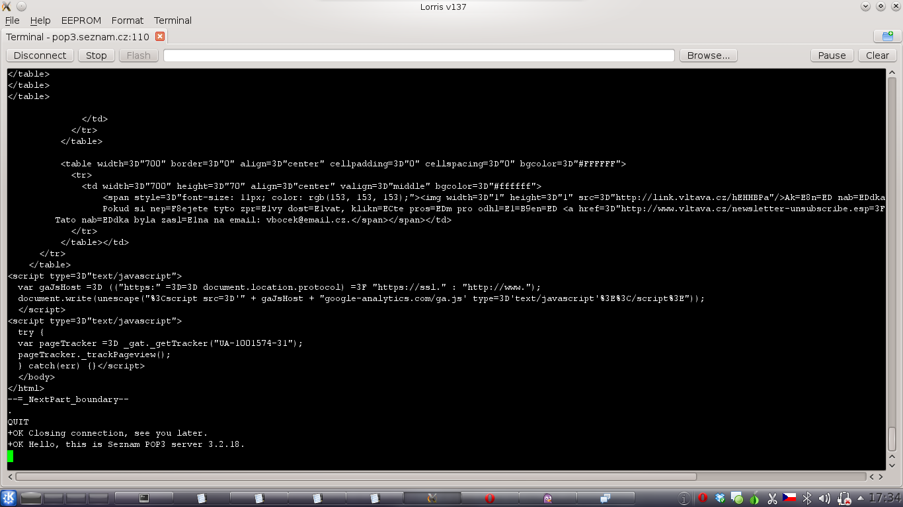

There are binaries available for MS Windows. If you're using other operating system, you have to build Lorris yourself.
Stable release - There is no stable release available at this time
Testing release - Testing releases are available at GitHub downloads page
GitHub repository is at https://github.com/Tasssadar/Lorris, you can clone it with:
git clone git://github.com/Tasssadar/Lorris.git
Testing and newest changes are in "master" branch, once there is a stable release, "stable" branch will be created.
Thanks to github, you can also download source code in .zip or .tar.gz archive on downloads page.
Main thing about Lorris is that it's modular - program iself provides only connection to target device, modules do all the work. You can run multiple modules at the same time (even connect them to the same port/address/whatever) as tabs, like in web browser.
Lorris is using Qt Framework (4.7), which (also) means it is multiplatform - it is tested on
Debian Linux(Wheezy, 64bit) and MS Windows(Xp, 7).
You can find Windows binaries in downloads section.
This module is graphical parser of incomming data, and displays them in user-selected widgets. Incomming data are expected to be in packet format, preferably with some kind of header. Exact packet format is set in this window, it should be pretty self-explanatory.
(Image is worth a thousand words, so take a look at this screenshot
so you can understand what am I talking about)
Once you have packet structure set-up, you can drag widgets from right bar to main "workspace".
To assign data to widget, just drag desired byte (or first byte from left side, in case you want to display for example uint32, which is 4 bytes long)
to widget. Each widget has it's individual settings, accesible by right-click.
You can also save currect Analyzer configuration and received data to file, so that you do not have set up everything every time you use it.
This module acts as simple proxy between serial port and TCP socket. You can connect from Lorris (or another program) to this proxy via internet network.
This is controling interface for Shupito programmer. It is programmer of microcontrollers or anything compatible with it. Lorris supports memory read, write and erasing and fuse read and write.
It also can utilize Shupito's RSR232 tunnel ability. When you set-up tunnel (see this screenshot, left-top), new connection type will appear - "Shupito tunnel". It is basically forwarded serial port, and it acts like one, so every module which use serial port connection can also use Shupito tunnel.
Standart terminal. It shows incomming data as normal text (and can handle \f, \r, \n and \b control characters) or as hex dump (you can chose mode in top "format" menu).
Download Lorris, open Lorris.pro in QtCreator and hit "Build" button.
You need libqwt-dev to build Lorris on Linux, at least version 6.0.0. If it is in your distribution's repository, just install it. If it is not, there are libqwt.so* and libqwtmathml.so* in dep/qwt/lib. Copy these files to your distro's lib directory, eg. /usr/lib. These are for 64bit only however.
For 32bit users: go to dep/qextserialport folder and execute these commands to rebuild QExtSerialPort for 32bit:
qmake qextserialport.pro
make clean
make
Now you can build Lorris with QtCreator or go to Lorris folder and execute these commands:
qmake Lorris.pro
make
Lorris is licensed under the GNU GPLv3 and uses these 3rd-party libraries:
 Main window |
 Analyzer module |
 Analyzer module - packet structure settings |
|
 Shupito module |
 Terminal module |
 Serial port <-> TCP proxy module |
{kind=link}
{kind=link}